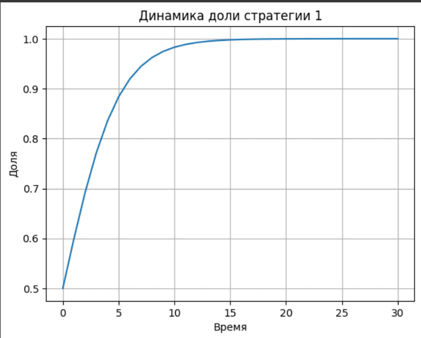

Доклад
Горяйнова А.А.
Российский университет дружбы народов, Москва, Россия
Динамический репликатор — модель из эволюционной
теории игр.
Относится к классу детерминированных, монотонных,
нелинейных моделей.
Позволяет отслеживать изменение долей типов в популяции во времени.
Цель: Изучить свойства и применение динамического
репликатора
Объект: Эволюционные динамики в популяциях
Предмет: Модель репликатора
Задачи:
- Раскрыть математический смысл уравнения - Показать на примере его
применение - Выделить особенности модели
$$ Pr_{t+1}(i) = \frac{Pr_t(i) \cdot \pi(i)}{\sum_{j=1}^{N} Pr_t(j) \cdot \pi(j)} $$
Представим двух конкурентов:
Стратегия 1 — использовать популярный браузер
(например, Chrome)
Стратегия 2 — использовать менее популярный браузер
(например, Opera)

Учитывает все типы в популяции
Нелинейная: возможно несколько равновесий
Без мутации: неинновационная
Отражает естественный отбор или предпочтения
Модель репликатора описывает адаптацию без внешнего вмешательства
Проста для численного моделирования
Применима в биологических, социальных и технических системах
Динамика зависит от структуры “игры” — матрицы выигрышей